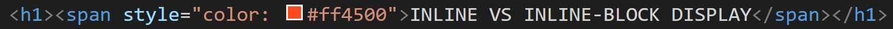

Inline elements don't start on a new line, and only take up as much width as necessary. Example tags include `span`, `a`, `strong`, and `em`.
These are useful for applying styles to small amount of text. For example, I used `span` to add color to the main header of this page:
Inline-block elements are the same as inline elements, with the only difference being you can set their width and height. They do not start on a new line like block elements, which means you can put them next to other inline elements. Example tags include `button` and `img`.